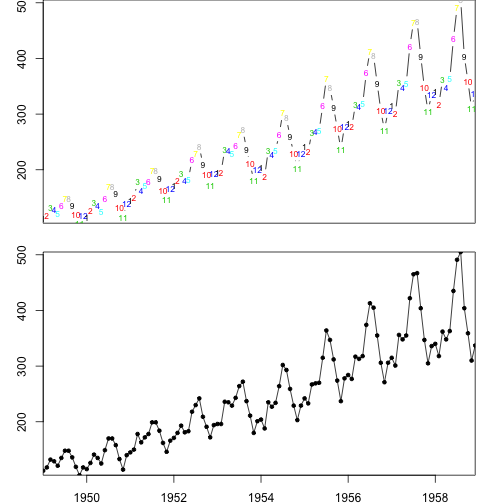
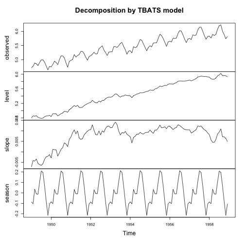
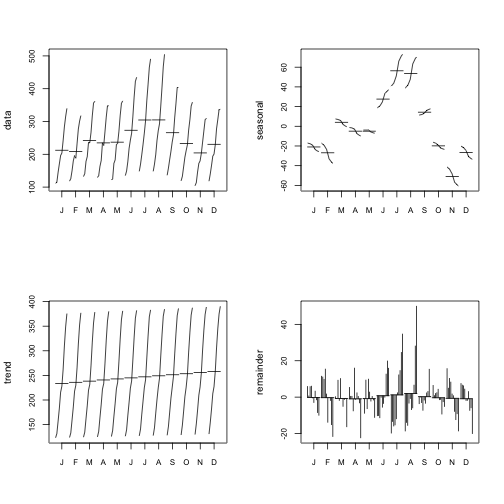

데이터 과학 – 기초 통계
시계열 데이터 예측(forecast)
학습 목표
- 시계열 데이터의 백미 예측을 살펴본다.
- 다양한 시계열 데이터 모형의 장단점을 비교한다.
- 자동 시계열 예측의 필요성을 이해한다.
1. 시계열 데이터 예측 자동화 1 2 3 4
시계열 데이터 예측모형을 자동화하는 이유는 다음과 같다.
- 시계열 데이터를 다루는 대부분의 사람들이 시계열 데이터에 다양한 시계열 모형을 적합시키는데 전문적인 훈련을 받지 못했다.
- 시계열 데이터에 대한 전문적인 지식읅 갖는 사람들도 수작업으로 예측모형을 만들어도 시계열 예측모형 자동화 알고리즘을 이기지 못한다.
- 가낸 수공업 방식 시계열 예측모형개발방법론으로 가능한 모든 시계열 모형을 적합시켜 가장 적절한 모형을 추출해내는 자동화 방식을 이길 수 없다.
- 다수 산업계에서 주별로 월별로 수많은 예측모형을 개발해서 예측값을 제시해야 하기 때문에 시계열 알고리즘을 통한 자동 예측 시스템이 필수적이다.
- 다변량 시계열 예측모형도 단변량 시계열 예측모형을 기반으로 한다.
2. 시계열 데이터 예측 정확성 측도
시계열 모형의 우수성을 측정하는 다양한 측도가 존재한다. 하지만, MAE, MSE, RMSE는 척도에 의존성이 있어 MAPE, MASE를 추천한다.
- \(\mathrm{MAE} = \frac{1}{n}\sum_{t=1}^n \left| Y_t - f_i \right| =\frac{1}{n}\sum_{t=1}^n \left| e_i \right|\)
- \(\mathrm{MSE} =\frac{1}{n}\sum_{t=1}^n(\hat{Y_t} - f_t)^2\)
- \(\mathrm{RMSD}=\sqrt{\frac{\sum_{t=1}^n (\hat y_t - f_t)^2}{n}}\)
- \(\mathrm{MAPE} = \frac{100}{n}\sum_{t=1}^n \left|\frac{Y_t-f_t}{Y_t}\right|\)
- \(\mathrm{MASE} = \frac{1}{T}\sum_{t=1}^T\left( \frac{\left| e_t \right|}{\frac{1}{T-1}\sum_{t=2}^T \left| Y_t-Y_{t-1}\right|} \right) = \frac{\sum_{t=1}^{T} \left| e_t \right|}{\frac{T}{T-1}\sum_{t=2}^T \left| Y_t-Y_{t-1}\right|}\)
3. ARIMA vs 지수평활(ETS) 모형
자기회귀누적이동평균(ARIMA, AutoRegressive Integrated Moving Average ) 모형과 ETS(Error,Trend,Seasonal, ExponenTial Smoothing) 모형에 대해서 서로 적대적으로 생각하는 분들도 많다. 박스-젠킨스가 제안한 ARIMA 모형이 매우 수학적인 반면에 ETS는 1950년대부터 실무적으로 개발되어 서로 동일한 목적으로 하고 있지만 많은 교류가 없어 보여 잘못 알려진 것도 많다.
- ARIMA 모형이 더 일반적이고 지수평활(exponential smoothing)모형은 적용범위가 한정되어 있다는 잘못된 미신이 존재한다.
- 선형 지수평활 모형은 ARIMA 모형의 특수한 사례다.
- 비선형 지수평활 모형에 대응되는 ARIMA 모형은 없다.
- 많은 ARIMA 모형은 대응되는 지수평활모형이 없다.
- 지수평활 모형은 정상성을 갖지 않는 모든 시계열 데이터를 모형화할 수 있다.
4. 항공여객수 자동예측
4.1. 환경설정
library(astsa)
library(fpp)
library(tidyverse)4.2. 항공여객 데이터
내장된 “AirPassengers” 데이터를 불러와서 모형개발에 사용될 데이터와 최적모형 선택을 위한 데이터를 준비한다.
# 1. 항공여객 데이터셋 ---------------------------------------------------------
data("AirPassengers")
ap_ts <- window(AirPassengers, start=1949, end=1958.99)
ap_ts_test <- window(AirPassengers, start=1959)4.3. 항공여객 데이터 탐색적 분석
항공여객 예측모형을 적합시키기 전에 데이터에 대한 이해와 모형개발전략을 위한 탐색적 데이터분석을 수행한다.
# 1.1. 항공여객 데이터셋 시각화 ---------------------------------------------------------
par(mfrow=c(2,1))
par(mar=c(2, 3, 0, 2), xaxs='i', yaxs='i')
plot(ap_ts, ylab="항공여객 (천명)", type="c", pch =20, xaxt='n', xlab="")
text(ap_ts, col=1:12, labels=1:12, cex=.7)
plot(ap_ts, ylab="항공여객 (천명)", type="o", pch =20, xlab="")
# 2. 시계열 분해 -----------------------------------------------------------------
# 기본 시계열 분해
ap_ts_decompM <- decompose(ap_ts, type = "multiplicative")
plot(ap_ts_decompM, xlab="")
# `forecast` 팩키지 계절변동 시각화
seasonplot(ap_ts, ylab="항공여객 (천명)", xlab="",
main="",
year.labels=TRUE, year.labels.left=TRUE, col=1:20, pch=19)
monthplot(ap_ts, ylab="항공여객 (천명)", xlab="", xaxt="n", main="")
axis(1, at=1:12, labels=month.abb, cex=0.8)
4.4. 항공여객 예측모형
ARIMA 모형 등 가능한 모든 시계열 모형을 항공여객 모형데이터에 적합시키고, 검증데이터에 예측모형 각각의 성능을 비교한 후에 가장 최적 모형을 선택한다. MASE가 가장 낮은 모형을 선택한다.
# 3. 모형선정 ------------------------------------------------------------------------
models <- list (
mod_arima = auto.arima(ap_ts, ic='aicc', stepwise=FALSE),
mod_exponential = ets(ap_ts, ic='aicc', restrict=FALSE),
mod_neural = nnetar(ap_ts, p=12, size=25),
mod_tbats = tbats(ap_ts, ic='aicc', seasonal.periods=12),
mod_bats = bats(ap_ts, ic='aicc', seasonal.periods=12),
mod_stl = stlm(ap_ts, s.window=12, ic='aicc', robust=TRUE, method='ets'),
mod_sts = StructTS(ap_ts)
)
forecasts <- lapply(models, forecast, 12)
forecasts$naive <- naive(ap_ts, 12)
par(mfrow=c(4, 2))
par(mar=c(2, 2, 1.5, 2), xaxs='i', yaxs='i')
for(f in forecasts){
plot(f, ylim=c(0,600), main="", xaxt="n")
lines(ap_ts_test, col='red')
}
acc <- lapply(forecasts, function(f){
accuracy(f, ap_ts_test)[2,,drop=FALSE]
})
acc <- Reduce(rbind, acc)
row.names(acc) <- names(forecasts)
acc <- acc[order(acc[,'MASE']),]
round(acc, 2) ME RMSE MAE MPE MAPE MASE ACF1 Theil's U
mod_tbats 36.25 43.03 36.44 8.00 8.05 1.28 0.68 0.82
mod_arima 42.53 44.45 42.53 9.93 9.93 1.49 0.32 0.92
mod_exponential 44.79 51.80 44.79 9.96 9.96 1.57 0.70 1.00
mod_neural 51.02 54.81 51.02 11.83 11.83 1.79 0.23 1.15
mod_bats 52.18 59.35 52.18 11.66 11.66 1.83 0.73 1.14
mod_stl 53.38 67.26 53.38 11.40 11.40 1.87 0.68 1.25
naive 91.33 113.19 91.33 19.54 19.54 3.20 0.67 2.11
mod_sts 274.99 301.30 274.99 62.94 62.94 9.62 0.77 6.03
4.5. 항공여객 최적예측모형 적합
검증데이터에 예측오차가 가장 작은 MASE값을 갖는 모형 tbats를 최종 예측모형으로 선정한다.
# 4. 모형적합 ------------------------------------------------------------------------
ap_tbats_fit <- tbats(ap_ts, ic='aicc', seasonal.periods=12)
plot(ap_tbats_fit)
ap_stl_fit <- stl(ap_ts, s.window = 12)
par(mfrow = c(2,2))
monthplot(ap_ts, ylab = "data", cex.axis = 0.8)
monthplot(ap_stl_fit, choice = "seasonal", cex.axis = 0.8)
monthplot(ap_stl_fit, choice = "trend", cex.axis = 0.8)
monthplot(ap_stl_fit, choice = "remainder", type = "h", cex.axis = 0.8)
4.6. 항공여객 예측
최적 예측모형에 기반해서 항공수요 예측값을 뽑아내고 최저모형과 예측값을 시각적으로 비교한다.
# 5. 예측 ------------------------------------------------------------------------
# 최적 모형
op <- par(mfrow = c(2,1))
par(mar=c(2, 2, 1.5, 2), xaxs='i', yaxs='i')
ap_tbats_fit_fcast <- forecast(ap_tbats_fit)
plot(ap_tbats_fit_fcast, xaxt="n")
#최저 모형
mod_sts_fit <- StructTS(ap_ts)
ap_sts_fit_fcast <- forecast(mod_sts_fit)
plot(ap_sts_fit_fcast)